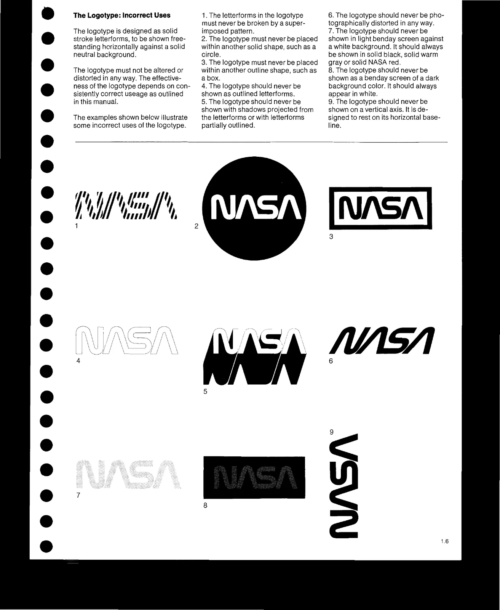

Una marca se vuelve reconocible cuando repite los mismos elementos una y otra vez.
Los mismos colores.
Las mismas tipografías.
El mismo estilo de ilustraciones.
El mismo logotipo.
La misma forma de utilizar fotografías.
La misma manera de hablar.
Si cada publicación del PASE utiliza una tipografía diferente, nuevos colores, otro estilo de ilustración o una forma distinta de colocar el logotipo, será mucho más difícil que los estudiantes aprendan a reconocer la marca.
Por eso, después del rebranding, una de las tareas más importantes será simplemente:
mantenerse fieles a lo que se definió.
El rebranding debería terminar con un manual de marca sencillo y fácil de utilizar.
Ese documento debería dejar claro, como mínimo:
Una vez definidas estas reglas, no deberían cambiar según el gusto de la persona que esté diseñando ese día.
Si el manual establece dos tipografías, se utilizan esas tipografías.
Si establece una paleta determinada, se utilizan esos colores.
Si define un estilo de ilustración, las nuevas ilustraciones deben seguir ese mismo estilo.
Si establece cómo utilizar el logotipo, no se modifica su forma, colores o posición arbitrariamente.
En el trabajo cotidiano, el manual de marca no debería entenderse como una sugerencia.
Es la regla. Lo más parecido a una “constitución nacional” que una marca puede tener.
Si algún día existe una buena razón para cambiar el sistema, puede actualizarse deliberadamente. Pero el cambio debe hacerse para toda la marca, no pieza por pieza.
Una publicación del PASE promocionando uno de sus porgramas puede ser completamente distinta de una publicación sobre orientación o de una invitación a un evento.
El contenido cambia.
Las fotografías pueden cambiar.
La información cambia.
Pero cuando un estudiante vea las tres publicaciones juntas debería pensar:
“Esto viene del PASE.”
Por eso, quien diseñe una nueva publicación no debería empezar preguntándose:
“¿Qué estilo voy a utilizar esta vez?”
Debería preguntarse:
“¿Cómo comunico esta idea utilizando el estilo del PASE?”
McDonald's ofrece un buen ejemplo porque su publicidad cambia constantemente, pero conserva una serie de elementos reconocibles.
En su renovación visual desarrollada con Turner Duckworth, la marca decidió utilizar de forma mucho más disciplinada elementos como:
Esas ilustraciones representan elementos como papas fritas, hamburguesas o ingredientes con un mismo estilo gráfico.
La marca no obliga a que todos sus anuncios sean iguales.
Lo que hace es darles el mismo lenguaje visual.
La enseñanza para el PASE es:
pueden existir muchas publicaciones diferentes sin que cada publicación tenga que inventar una nueva identidad.
La NASA lleva esta lógica todavía más lejos.
Su manual de identidad establece reglas concretas extremadamente detalladas sobre el uso del logotipo, colores, tipografías, tamaños, espacios y otros elementos gráficos.
La NASA parece ser muy obsesiva con esto.
La razón de hacerlo así, no solo es de coherencia visual, también es práctica.
Dentro de una organización, muchas personas producen presentaciones, publicaciones, señalización y otros materiales.
Si cada una decidiera cómo debe verse la NASA, existirían cientos de versiones diferentes de la misma institución.
El manual evita precisamente eso.
El propio manual gráfico de 1976 explicaba que el sistema visual debía permitir que publicaciones, vehículos, señalización y otros materiales pudieran ser identificados inequívocamente como pertenecientes a la NASA.

El PASE necesita la misma lógica:
que diferentes personas puedan producir materiales distintos sin que la marca cambie cada vez que cambia la persona que los diseña.
Antes de publicar cualquier pieza del PASE, revisar:
¿Utiliza los colores correctos?
¿Utiliza las tipografías correctas?
¿Respeta el logotipo?
¿Las ilustraciones pertenecen al estilo definido?
¿Las fotografías siguen el mismo criterio?
¿La forma de hablar corresponde al PASE?
Si la respuesta es sí, adelante.
Si la respuesta es no, la primera pregunta debería ser:
“¿Qué dice el manual de marca?”